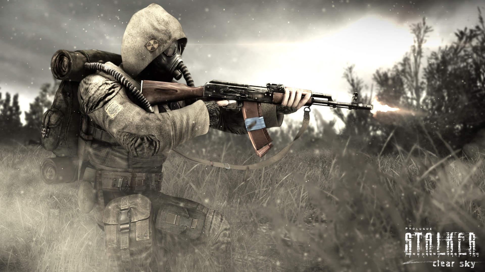
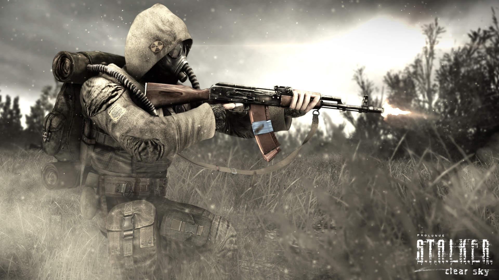

Огляд гри
Приквел до подій "Тіні Чорнобиля", що розповідає про спробу вийти до центру Зони та події, які цьому передували.
Особливості
Нова система угрупувань, покращена графіка, нові аномалії та квести.
Приквел до подій "Тіні Чорнобиля", що розповідає про спробу вийти до центру Зони та події, які цьому передували.
Нова система угрупувань, покращена графіка, нові аномалії та квести.
"S.T.A.L.K.E.R.: Clear Sky" — це приквел до оригінальної гри Shadow of Chernobyl, що висвітлює події за рік до пригод Меченого. Гравець виконує роль Шрама — досвідченого провідника, що вижив після смертельного викиду, внаслідок чого отримав здатність опиратись його впливу. Його рятує угруповання "Чисте Небо", яке займається науковим вивченням Зони. Але Зона веде себе дедалі агресивніше, відбуваються часті викиди, а її структура змінюється. Гравцю доручають дослідити, чому це відбувається, і запобігти катастрофі. В процесі розкриваються зв'язки між науковими дослідженнями, експериментами з ноосферою і впливом людини на Зону, що все частіше реагує як жива сутність.
Сюжет тісно пов’язаний із формуванням основних фракцій Зони: "Свобода", "Обов'язок", "Бандити", "Чисте Небо", "Військові", і врешті — "Моноліт". Гравець побачить, як невидима боротьба впливає на баланс сил, і стане свідком формування тих подій, які згодом призведуть до появи Меченого.
Clear Sky вийшла 2008 року й відразу викликала бурхливі обговорення. Гравці високо оцінили амбіційність проекту — ідея війни фракцій була новою для FPS на той час. Проте реліз супроводжувався великою кількістю багів і нестабільною роботою. GSC оперативно випустила низку патчів, включно з глобальним 1.5.10, що значно покращив ситуацію. Незважаючи на критику, Clear Sky стала важливим кроком у розвитку всесвіту S.T.A.L.K.E.R.
До гри були включені нові локації — Болота, Агропром, Лісопилка, ЧАЕС, які ніколи раніше не з’являлись або були повністю перероблені. Clear Sky експериментував із сюжетною подачею — гравець отримував не лінійний шлях, а змінну історію, що враховувала події у фракційному конфлікті, гравець міг бути як героєм, так і зрадником в очах різних угруповань.
Попри проблеми на старті, гра отримала культовий статус серед шанувальників серії. Вона вважається найбільш складною в плані виживання та боїв, і має найбільш "сиру" Зону — брудну, агресивну, хаотичну. Деякі фанати вважають її найатмосфернішою через постійне відчуття невизначеності, боротьби та зміни ситуації на мапі.
Clear Sky залишила після себе потужну базу для модифікацій — від HD-текстур до глобальних переробок фракційної системи. Завдяки їй ідеї війни фракцій пізніше були розвинуті у Call of Pripyat та великих фанатських проєктах.